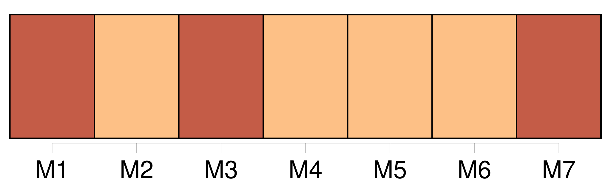
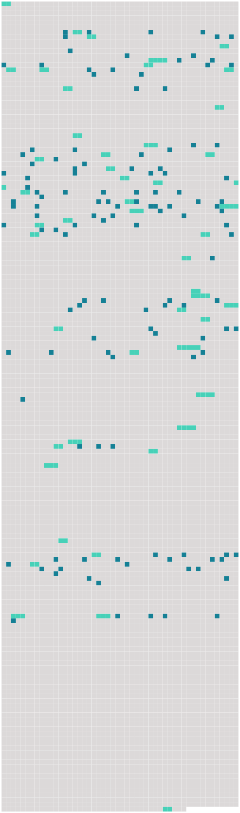

Longueur nb maillons : 177 mentions |
  |
[Ma mère] appelle cela des visions. [17 phrases] Une seule porte dans sa sévérité un reste d'affection et de regret : [c'] est [ma mère] [Elle] te blâme, il faut bien t'attendre à cela ; mais [elle] cherche à t'excuser, et l'on voit qu' [elle] lance sur toi l'anathème avec douleur.
Son esprit n'est pas éclairé, tu le sais ; mais [son] cœur est bon, [pauvre femme] ! [3 phrases]
répondit Pauline, il serait bien facile de [la] tromper ; [elle] est aveugle. [5 phrases] J'ai failli me marier il y a cinq ans ; un an après, [ma mère] a perdu la vue. Vois comme il est heureux que je sois restée fille pour [la] soigner!! [2 phrases]
— Il est évident, dit -elle en souriant à son amie à travers ses pleurs, que tu aurais été distraite par mille autres soins également sacrés, et qu' [elle] eût été plus à plaindre qu'elle ne l'est.
— Je [l'] entends remuer, dit Pauline. [1 phrases] Laurence la suivit sur la pointe du pied, et vit [la vieille femme aveugle] étendue sur [son] lit en forme de corbillard. [Elle] était jaune et luisante. [Ses] yeux, hagards et sans vie, [lui] donnaient absolument l'aspect d'un cadavre. [1 phrases] Pauline s'approcha de [sa mère] , pencha doucement son visage vers ce visage affreux, et [lui] demanda bien bas si [elle] dormait. [L'aveugle] ne répondit rien, et [se tourna] vers la ruelle du lit.
Pauline arrangea [ses] couvertures avec soin sur [ses] membres étiques, referma doucement le rideau, et reconduisit son amie dans le salon. — Causons, lui dit -elle ; [ma mère] se lève tard ordinairement. Nous avons quelques heures pour nous reconnaître ; nous trouverons bien un moyen de réveiller [son] ancienne amitié pour toi. Peut-être suffira-t -il de [lui] dire que tu es là!! [10 phrases] Et puis je n'osais pas accuser [ma mère] ; je ne pouvais pas me décider à t'avouer les petitesses de [son] caractère et les préjugés de [son] esprit. [12 phrases] Elle avait quinze ans lorsque, sa famille étant tombée dans la misère, il lui fallut quitter Paris et se retirer en province avec [sa mère] [8 phrases]
Ii [2 phrases] dit [la mère aveugle] en s'asseyant sur le bord de [son] lit, appuyée sur [sa] fille, qui est donc là près de nous?? [Je] sens le parfum d'une belle dame.
[Je] parie que c'est madame Ducornay, qui est revenue de Paris avec toutes sortes de belles toilettes que [je] ne pourrai pas voir, et de bonnes senteurs qui nous donnent la migraine.
— Non, [maman] , répondit Pauline, ce n'est pas madame Ducornay. [1 phrases]
reprit [l'aveugle] en étendant le bras.
— [Devinez] , dit Pauline en faisant signe à Laurence de toucher la main de [sa mère] [1 phrases] s'écria [l'aveugle] en passant [ses] doigts noueux sur ceux de l'actrice. [3 phrases] Pourtant [je] connais cette main -là. Mais c'est quelqu'un que [je] n'ai pas vu depuis longtemps. [2 phrases]
— [Je] connais aussi cette voix, dit [l'aveugle] , et pourtant [je] ne la reconnais pas.
[Elle] garda quelques instants le silence sans quitter la main de Laurence, en levant sur elle [ses] yeux ternes et vitreux, dont la fixité était effrayante. — Me voit [-elle] ?? [1 phrases]
— Nullement, répondit celle -ci ; mais [elle] a toute [sa] mémoire ; et, d'ailleurs, notre vie compte si peu d'événements, qu'il est impossible qu' [elle] ne te reconnaisse pas tout à l'heure.
À peine Pauline eut -elle prononcé ces mots, que [l'aveugle] , repoussant la main de Laurence avec un sentiment de dégoût qui allait jusqu'à l'horreur, dit de [sa] voix sèche et cassée : [3 phrases] — Ô [ma mère] ??
s'écria Pauline en rougissant de honte et de chagrin, et en pressant [sa mère] dans ses bras pour [lui] faire comprendre ce qu'elle éprouvait. [1 phrases] — Allons, reprit [l'aveugle] , [qui] craignait instinctivement de déplaire à [sa] fille, en raison du besoin qu' [elle] avait de son dévouement, laissez [-moi] le temps de [me] remettre un peu ; [je] suis si surprise!! [1 phrases] [Je] ne voudrais pas vous faire de chagrin, mademoiselle … ou madame …… [2 phrases]
— Et elle est toujours Laurence, dit avec chaleur la bonne Pauline en [l'] embrassant, toujours la même âme généreuse, le même noble cœur … — Allons, arrange [-moi] , [ma] fille, dit [l'aveugle] [qui] voulait changer de propos, ne pouvant se résoudre ni à contredire [sa] fille ni à réparer [sa] dureté envers Laurence ; coiffe [-moi] donc, Pauline ; [j'] oublie, moi, que les autres ne sont point aveugles et qu'ils voient en [moi] quelque chose d'affreux. Donne [-moi] [mon] voile, [mon] mantelet …… C'est bien, et maintenant apporte [-moi] [mon chocolat de santé] , et offres -en aussi à …… [2 phrases] Quand [la vieille dame] , enveloppée dans [sa] mante d'indienne brune à grandes fleurs rouges, et coiffée de [son] bonnet blanc surmonté d'un voile de crêpe noir qui [lui] cachait la moitié du visage, se fut assise vis-à-vis de [son] frugal déjeuner, [elle] s'adoucit peu à peu. L'âge, l'ennui et les infirmités [l'] avaient amenée à ce degré d'égoïsme qui fait tout sacrifier, même les préjugés les plus enracinés, aux besoins du bien-être. [L'aveugle] vivait dans une telle dépendance de [sa] fille, qu'une contrariété, une distraction de celle -ci pouvait apporter le trouble dans cette suite d'innombrables petites attentions dont la moindre était nécessaire pour [lui] rendre la vie tolérable. Quand [l'aveugle] était commodément couchée, et qu' [elle] ne craignait plus aucun danger, aucune privation pour quelques heures, [elle] se donnait le cruel soulagement de blesser par des paroles aigres et des murmures injustes les gens dont [elle] n'avait plus besoin ; mais, aux heures de [sa] dépendance, [elle] savait fort bien se contenir et enchaîner leur zèle par des manières plus affables. [1 phrases] Elle en fit encore une autre qui l'attrista davantage : c'est que [la mère] avait une peur réelle de [sa] fille. On eût dit qu'à travers cet admirable sacrifice de tous les instants, Pauline laissait percer malgré elle un muet mais éternel reproche, que [sa mère] comprenait fort bien et [redoutait] affreusement. [6 phrases] Elle eût voulu pouvoir persister dans son illusion, la croire heureuse et rayonnante dans son martyre comme une vierge catholique des anciens jours, voir [la mère] heureuse aussi, oubliant [sa] misère pour ne songer qu'à la joie d'être aimée et assistée ainsi ; enfin elle eût voulu, puisque ce sombre tableau d'intérieur était sous ses yeux, y contempler des anges de lumière, et non de tristes figures chagrines et froides comme la réalité. [5 phrases] Quant à [l'aveugle] , elle était instinctivement captivée et comme vivifiée par le beau son de cette voix, par la pureté de ce langage, par l'animation de cette causerie intelligente, colorée et profondément naturelle, qui caractérise les vrais artistes, et ceux du théâtre particulièrement. [La mère de Pauline] , quoique remplie d'entêtement dévot et de morgue provinciale, était une femme assez distinguée et assez instruite pour le monde où [elle] avait vécu. [Elle] l'était du moins assez pour se sentir frappée et charmée, malgré [elle] , d'entendre quelque chose de si différent de [son] entourage habituel et de si supérieur à tout ce qu'elle avait jamais rencontré. Peut-être ne s'en rendait [-elle] pas bien compte à elle -même ; mais il est certain que les efforts de Laurence pour [la] faire revenir de [ses] préventions réussissaient au delà de ses espérances. [La vieille femme] commençait à s'amuser si réellement de la causerie de l'actrice, qu' [elle] l'entendit avec regret, presque avec effroi, demander des chevaux de poste. [Elle] fit alors un grand effort sur [elle -même] , et la pria de rester jusqu'au lendemain. [3 phrases] Cependant [l'aveugle] insista tellement, et Pauline, à l'idée de se séparer de nouveau, et pour jamais sans doute, de son amie, versa des larmes si sincères, que Laurence céda, écrivit à sa mère de ne pas être inquiète si elle retardait d'un jour son arrivée à Lyon, et ne commanda ses chevaux que pour le lendemain au soir.
[L'aveugle] , entraînée de plus en plus, poussa la gracieuseté jusqu'à vouloir dicter une phrase amicale pour [son] ancienne connaissance, la mère de Laurence. [1 phrases] ajouta-t [-elle] lorsqu' [elle] eut entendu plier la lettre et pétiller la cire à cacheter, c'était une bien excellente personne, spirituelle, gaie, confiante …… [1 phrases] car enfin, [ma] pauvre enfant, c'est elle qui répondra devant Dieu du malheur que tu as eu de monter sur les planches. [1 phrases] [Je] lui ai écrit trois lettres à cette occasion, et Dieu sait si elle les a lues!! [1 phrases] si elle [m'] eût écoutée, tu n'en serais pas là!! [2 phrases] c'est une excellente mère, [ma bonne madame D …] …
, et, quoique je sois actrice, je [vous] assure que je l'aime autant que Pauline [vous] aime. — Tu as toujours été une bonne fille, [je] le sais, dit [l'aveugle] [1 phrases] Vous voilà riches, et [je] comprends que ta mère s'en trouve fort bien, car c'est une femme qui a toujours aimé ses aises et ses plaisirs ; mais l'autre vie, [mon] enfant, vous n'y songez ni l'une ni l'autre!!
… Enfin, [je] me réfugie dans la pensée que tu ne seras pas toujours au théâtre, et qu'un jour viendra où tu feras pénitence. [14 phrases] Il avait toujours soupçonné [la vieille D …] … d'être légitimiste au fond du cœur, car [elle] était dévote. [15 phrases] [La mère D …] … [1 phrases] Elle fut si aimable et si jolie dans ce badinage, que le bon maire en tomba amoureux comme un fou, voulut lui baiser la main, et ne se retira que lorsque [madame D …] et Pauline lui eurent promis de le faire dîner chez elles ce même jour avec la belle actrice de la capitale. [1 phrases] Laurence essaya de se débarrasser des impressions tristes qu'elle avait reçues, et voulut récompenser [l'aveugle] du sacrifice qu' [elle] lui faisait de [ses] préjugés en [lui] donnant quelques heures d'enjouement. [1 phrases] Jamais [l'aveugle] ne s'était autant amusée ; Pauline était singulièrement agitée ; elle s'étonnait de se sentir triste au milieu de sa joie. [3 phrases] C'était la femme du maire, qui, ne pouvant résister plus longtemps à sa curiosité, venait adroitement et comme par hasard voir [madame D …] … [27 phrases] Toutes ces femmes se tenaient d'un côté du salon comme un régiment en déroute, et de l'autre côté, entourée de Pauline, de [sa mère] et de quelques hommes de bon sens qui ne craignaient pas de causer respectueusement avec elle, Laurence siégeait comme une reine affable qui sourit à son peuple et le tient à distance. [3 phrases] À l'arrivée des premières visites, [l'aveugle] avait été confuse, puis contrariée, puis blessée.
Quand [elle] entendit tout ce monde remplir [son] salon froid et abandonné depuis si longtemps, [elle] prit [son] parti, et, cessant de rougir de l'amitié qu' [elle] avait témoignée à Laurence, [elle] en affecta plus encore, et [accueillit] par des paroles aigres et moqueuses tous ceux qui vinrent [la] saluer. — Oui-dà, mesdames, répondait [-elle] , [je] me porte mieux que [je] ne pensais, puisque [mes infirmités] ne font plus peur à personne. Il y a deux ans que l'on n'est venu [me] tenir compagnie le soir, et c'est un merveilleux hasard qui m'amène toute la ville à la fois.
Est -ce qu'on aurait dérangé le calendrier, et [ma] fête, que [je] croyais passée il y a six mois, tomberait -elle aujourd'hui?
Puis, s'adressant à d'autres qui n'étaient presque jamais venues chez [elle] , [elle] poussait la malice jusqu'à leur dire en face et tout haut : vous faites comme [moi] , vous faites taire vos scrupules de conscience, et vous venez, malgré vous, rendre hommage au talent?? [2 phrases] de s'être mise au théâtre ; vous avez fait comme [moi] , vous avez trouvé cela révoltant, affreux!! [2 phrases]
Vous ne direz pas le contraire, car enfin [je] ne crois pas être devenue tout à coup assez aimable et assez jolie pour que l'on vienne en foule jouir de [ma] société. [6 phrases] Il est certain que, lorsque les deux amies et la mère aveugle se retrouvèrent seules ensemble au coin du feu, Pauline fut surprise et même un peu blessée de voir que Laurence reportait toute sa reconnaissance sur [la vieille femme] Ce fut avec une noble franchise que l'actrice, baisant la main de [madame D …] …
et [l'] aidant à reprendre le chemin de [sa] chambre, [lui] dit qu'elle sentait tout le prix de ce qu' [elle] avait fait et de ce qu' [elle] avait été pour elle durant cette petite épreuve. [98 phrases] Elle resta ainsi jusqu'à l'heure où [sa mère] s'éveillait. |
 |
La ressource peut être téléchargée sur la page Ortolang
Si vous avez des questions ou vous voyez des erreurs, merci d'envoyer un mail à silvia.federzoni89@gmail.com
Site développé par S. Federzoni (contact)